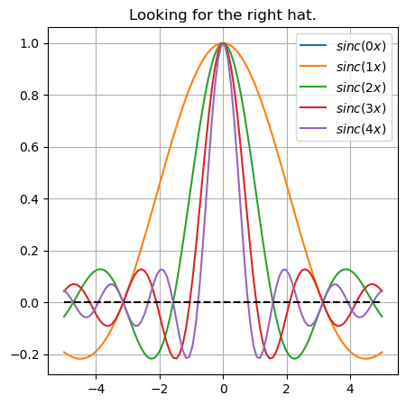
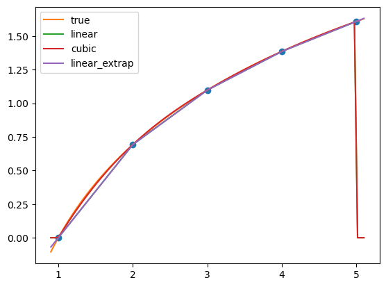

# these lines need to be run only once per program
import numpy as np
import matplotlib
from matplotlib import pyplot as pltNumeric Python
Numpy/scipy/matplotlib
- Most python scientists, use the following libraries:
numpy: performant array library (vectors, matrices, tensors)matplotlib: plotting libraryscipy: all kinds of mathematical routines
- In the rest of the course, we’ll make some use of
numpyandmatplotlib - They are included in all python distributions like Anaconda Python
- All additional libraries use
numpyandmatplotlib:pandas,statsmodels,sklearn
Importing the libraries
It is standard to import the libraries as np, and plt. We’ll follow this convention here.
print(f"Numpy version {np.__version__}")
print(f"Matplotlib version {matplotlib.__version__}")Numpy version 2.0.2
Matplotlib version 3.9.2Numpy
What is Numpy
Numpy is an array type (python object) meant to store efficiently homogenous, square, arrays (like \((a_{i})_{i\in [1,N]}\) \((m_{i,j})_{i\in [1,N], j\in [1,K]}\) or \((b_{i,j,k})_{i\in [1,N],j\in[1,J],k \in [1,K]}\))
By default its stores data in contiguous C-order (last index varies faster), but also supports Fortran order and strided arrays (non-contiguous).
Numpy has introduced well thought conventions, that have been reused by many other libraries (tensorflow, pytorch, jax), or even programming languages (julia)
Vector Creation
- Vectors and matrices are created with the
np.array(...)function. - Special vectors can be created with
np.zeros,np.ones,np.linspace
# an array can be created from a list of numbers
np.array([1.0, 2.0,3.0])array([1., 2., 3.])# or initialized by specifying the length of the array
np.zeros(10000000)array([0., 0., 0., ..., 0., 0., 0.])np.array([i for i in range(10000000)])np.arange(10000000)array([ 0, 1, 2, ..., 9999997, 9999998, 9999999])# 10 regularly spaced points between 0 and 1
np.linspace(0, 1, 11)array([0. , 0.1, 0.2, 0.3, 0.4, 0.5, 0.6, 0.7, 0.8, 0.9, 1. ])Matrix Creation
- A matrix is a 2-dimensional array and is created with
np.array - Function
np.matrix()has been deprecated: do not use it. - There are functions to create specific matrices:
np.eye,np.diag, …
# an array can be created from a list of (equal size) lists
m = np.array([
[1.0, 2.0, 3.0],
[4 , 5, 6]
])
marray([[1., 2., 3.],
[4., 5., 6.]])m.ndim2# initialize an empty matrix with the dimensions as a tuple
A = np.zeros( (2, 3) )
Aarray([[0., 0., 0.],
[0., 0., 0.]])# matrix dimensions are contained in the shape attribute
A.shape(2, 3)Tensors
The construction generalizes to higher dimension arrays (a.k.a. tensors)
# an array can be created from a list of list of lists
T = np.array([
[
[1.0, 2.0, 3.0],
[4 , 5, 6]
],
[
[7.0, 8.0, 9.0],
[10 , 11, 12]
]
])
T.shape(2, 2, 3)# initialize an empty matrix with the dimensions as a tuple
A = np.zeros( (2, 3, 2, 2,4, 5, 10,2) )
A.shape(2, 3, 2, 2, 4, 5, 10, 2)# matrix dimensions are contained in the shape attribute
A.nbytes76800Linear Algebra
Vector multiplications and Matrix multiplications can be performed using special sign @
A = np.array([[1.0, 2.0], [2,4]])
Aarray([[1., 2.],
[2., 4.]])#objects in numpy have 64bits precision by defaultA.dtypedtype('float64')B = np.array([1.0, 2.0])
Barray([1., 2.])A @ Barray([ 5., 10.])A @ Aarray([[ 5., 10.],
[10., 20.]])Note how multiplication reduces total number of dimensions by 2. It is a tensor reduction.
print(A.shape, A.shape, (A@A).shape)Scalar types
Numpy arrays can contain data of several scalar types.
[True, False, True][True, False, True]# vector of boolean
boolean_vector = np.array( [True, False, True] )
print(f"type of scalar '{boolean_vector.dtype}'")
boolean_vectortype of scalar 'bool'dtype('bool')# vector of integers
int_vector = np.array([1, 2, 0])
print(f"type of scalar '{int_vector.dtype}'")
int_vectortype of scalar 'float64'array([1., 2., 0.])By default, numerical arrays contain float64 numbers (like matlab). But GPUs typically process 16 bits or 32 bits numbers.
Can you create a 32 bits array?
# your code here
np.array([1,2,3,4,5], dtype="float32");
np.zeros([1,2,3,4,5], dtype=np.float128);m = np.array([
[1,2,3],
[4,5,6],
[7,8,9]
], order='F')marray([[1, 2, 3],
[4, 5, 6],
[7, 8, 9]])m.ravel(order='F')array([1, 4, 7, 2, 5, 8, 3, 6, 9])# python doesn' t explicitely differentiate between float types:
type(3.43)
# numpy provides precise numerical types:
np.float128numpy.longdoubleSubscripting Vectors
- Elements and subarrays, can be retrieved using the same syntax as lists and strings.
- Remember that indexing starts at 0.
V = np.array([0., 1., 2., 3., 4.])
display(V[1]) # second elementnp.float64(1.0)V = np.array([0., 1., 2., 3., 4.])
display(V[1:3]) # second, thirdarray([1., 2.])Modifying Vector Content
- Elements and suvectors, can be assigned to new values, as long as they have the right dimensions.
V = np.array([1., 1., 2., 4., 5., 8., 13.])
V[3] = 3.0
Varray([ 1., 1., 2., 3., 5., 8., 13.])V = np.array([1., 1., 2., 4., 5., 8., 13.])
# V[1:4] = [1,2,3,4] # this doesn't work
V[1:4] = [2,3,4] # this works
# slice: 1:4 -> V[1], V[2], V[3] (not V[4])
# indices start at 0, so V[1] is the second element
# V[1:4] = 9.9
Varray([ 1. , 9.9, 9.9, 9.9, 5. , 8. , 13. ])# np.array([2,3, ["ji"]],dtype='object')V.copy()array([ 1. , 9.9, 9.9, 9.9, 5. , 8. , 13. ])Subscripting Matrices
- Indexing generalizes to matrices: there are two indices istead of one:
M[i,j] - One can extract a row, or a column (a slice) with
M[i,:]orM[:,i] - A submatrix is defining with two intervals:
M[i:j, k:l]orM[i:j, :], …
M = np.array([[1,2,3],[4,5,6],[7,8,9]])
Marray([[1, 2, 3],
[4, 5, 6],
[7, 8, 9]])M[0,1] # access element (1,2)np.int64(2)M[2,:] # third row 1M[:,1] array([2, 5, 8])# second column # M[i,1] for any iM[1:(1+2), :] # lines from 1 (included) to 3 (excluded) ; all columnsarray([[4, 5, 6],
[7, 8, 9]])Modifying matrix content
M = np.array([[1,2,3],[4,5,6],[7,8,9]])
Marray([[1, 2, 3],
[4, 5, 6],
[7, 8, 9]])M[0,0] = 0
Marray([[0, 2, 3],
[4, 5, 6],
[7, 8, 9]])M[1:3, 1:3] = np.array([[0,1],[1,0]]) # dimensions must match
Marray([[0, 2, 3],
[4, 0, 1],
[7, 1, 0]])Element-wise algebraic operations
- The following algebraic operations are defined on arrays:
+,-,*,/,**. - Comparisons operators (
<,<=,>,>=,==) are defined are return boolean arrays. - They operate element by element.
A = np.array([1,2,3,4])
B = np.array([4,3,2,1])
A+Barray([5, 5, 5, 5])A*B # note the difference with A@B
# in julia : A*B (matmematical multiplication) , A .* B (elementwise)array([4, 6, 6, 4])A@B # note the difference with A@Bnp.int64(20)A>Barray([False, False, True, True])At first, one might be surprised that the default multiplication operator is element-wise multiplication rather than matrix multiplication.
There are at least two good reasons:
- consistency: all operators can be broadcasted with the exact same rules (like
*,+,>) - for many workflows, elementwise operations are more common than matrix multiplication
Element-wise logical operations
- The following logical operations are defined element-wise on arrays:
&(and),|(or),~(not)
A = np.array([False, False, True, True])
B = np.array([False, True, False, True])~Aarray([ True, True, False, False])A | Barray([False, True, True, True])A & Barray([False, False, False, True])Vector indexing
- Arrays can be indexed by boolean arrays instead of ranges.
- Only elements corresponding to true are retrieved
x = np.linspace(0,1,6)
xarray([0. , 0.2, 0.4, 0.6, 0.8, 1. ])# indexes such that (x^2) > (x/2)
x**2 > (x/2)array([False, False, False, True, True, True])cond = x**2 > (x/2)
x[ cond ] array([0.6, 0.8, 1. ])Going further: broadcasting rules
- Numpy library has defined very consistent conventions, to match inconsistent dimensions.
- Ignore them for now…
M = np.eye(4)
Marray([[1., 0., 0., 0.],
[0., 1., 0., 0.],
[0., 0., 1., 0.],
[0., 0., 0., 1.]])M[2:4, 2:4] = 0.5 # float
Marray([[1. , 0. , 0. , 0. ],
[0. , 1. , 0. , 0. ],
[0. , 0. , 0.5, 0.5],
[0. , 0. , 0.5, 0.5]])M[2:4, 2:4] = np.ones((2,2))# matrix
Marray([[1., 0., 0., 0.],
[0., 1., 0., 0.],
[0., 0., 1., 1.],
[0., 0., 1., 1.]])M[:2,:2]array([[1., 0.],
[0., 1.]])M[:2,:2] = np.array([0.1, 0.2]) # vector (v_n) behave (v_jn)_jn where v_jn = v_n
Marray([[0.1, 0.2, 0. , 0. ],
[0.1, 0.2, 0. , 0. ],
[0. , 0. , 1. , 1. ],
[0. , 0. , 1. , 1. ]])v = np.array([0.1, 0.2])
v[:,np.newaxis].shape # 2x1 matrix
M[:2,:2] = v[:,np.newaxis] # assigning a 2x1 matrix to a 2x2 matrix
Marray([[0.1, 0.1, 0. , 0. ],
[0.2, 0.2, 0. , 0. ],
[0. , 0. , 1. , 1. ],
[0. , 0. , 1. , 1. ]])v = np.array([0.1, 0.2])
# v[:,np.newaxis].shape # 2x1 matrix
M[:2,:2] = v[np.newaxis,:] # assigning a 1x2 matrix to a 2x2 matrix
Marray([[0.1, 0.2, 0. , 0. ],
[0.1, 0.2, 0. , 0. ],
[0. , 0. , 1. , 1. ],
[0. , 0. , 1. , 1. ]])Going Further
- Other useful functions (easy to google):
np.arange()regularly spaced integersnp.where()find elements in- …
Matplotlib
Matplotlib
matplotlibis …- object oriented api optional Matlab-like syntax
- main function is
plt.plot(x,y)wherexandyare vectors (or iterables like lists)- lots of optional arguments
from matplotlib import pyplot as pltExample
x = np.linspace(-1,1,6)y = np.sin(x)/x # sinus cardinalplt.plot(x,y,'o')
plt.plot(x,y)Example (2)
[i for i in range(5)][0, 1, 2, 3, 4]x = np.linspace(-5,5,100)
fig = plt.figure(figsize=(5,5)) # keep a figure open to draw on it
for k in range(1,5): # same 1:5
y = np.sin(x*k)/(x*k)
plt.plot(x, y, label=f"$sinc({k} x)$") # label each line
plt.plot(x, x*0, color='black', linestyle='--')
plt.grid(True) # add a grid
plt.title("Looking for the right hat.")
plt.legend(loc="upper right")/tmp/ipykernel_941113/3942191842.py:6: RuntimeWarning: invalid value encountered in divide
y = np.sin(x*k)/(x*k)
Example (3)
x = np.linspace(-5,5,100)
plt.figure()
plt.subplot(2,2,1) # create a 2x2 subplot and draw in first quadrant
plt.plot(x,x)
plt.title("Capital")
plt.grid()
plt.subplot(2,2,2) # create a 2x2 subplot and draw in second quadrant
plt.plot(x,-x)
plt.title("Unemployment")
plt.grid()
plt.subplot(2,2,3) # create a 2x2 subplot and draw in third quadrant
plt.plot(x,-x)
plt.title("Investment")
plt.grid()
plt.subplot(2,2,4) # create a 2x2 subplot and draw in fourth quadrant
plt.plot(x,x)
plt.title("Consumption")
plt.grid()
plt.suptitle("GDP forecast")
plt.tight_layout() # save some spaceAlternatives to matplotlib
- plotly (nice javascript graphs)
- bqplot (native integration with jupyter)
- altair
- excellent for dataviz/interactivity
- python wrapper to Vega-lite
- very efficient to visualize
pandasdata (i.e. a dataframe)
import thisThe Zen of Python, by Tim Peters
Beautiful is better than ugly.
Explicit is better than implicit.
Simple is better than complex.
Complex is better than complicated.
Flat is better than nested.
Sparse is better than dense.
Readability counts.
Special cases aren't special enough to break the rules.
Although practicality beats purity.
Errors should never pass silently.
Unless explicitly silenced.
In the face of ambiguity, refuse the temptation to guess.
There should be one-- and preferably only one --obvious way to do it.
Although that way may not be obvious at first unless you're Dutch.
Now is better than never.
Although never is often better than *right* now.
If the implementation is hard to explain, it's a bad idea.
If the implementation is easy to explain, it may be a good idea.
Namespaces are one honking great idea -- let's do more of those!def f(x: float, gamma:float=1.0)->float:
"""The docstring documents what f does.
Computes CRRA utility with x.
Docstring is just a string just after the definition.
"""
if gamma==1.0:
return np.log(x)
else:
return x**(1-gamma)/(1-gamma)
f(3, gamma=2.0)-0.3333333333333333# f("ji")f?Signature: f(x: float, gamma: float = 1.0) -> float
Docstring:
The docstring documents what f does.
Computes CRRA utility with x.
Docstring is just a string just after the definition.
File: /tmp/ipykernel_941113/2895034134.py
Type: function(lambda x: x**2) (5.)25.0from numpy import log
log(A)/tmp/ipykernel_941113/2689816552.py:2: RuntimeWarning: divide by zero encountered in log
log(A)array([-inf, -inf, 0., 0.], dtype=float16)import numpy as np
from scipy.interpolate import RegularGridInterpolator
f = lambda x: np.log(x)
xs = np.linspace(1, 5, 5)
ys = f(xs)
# dataset: (xs, ys)
# # linear interpolation
interp_linear = RegularGridInterpolator(
(xs,), # we'r in dimension 1 we need a tuple of length 1
ys,
bounds_error=False,
fill_value=0.0
)
interp_linear( [1.3] ) # interpolate
# # cubic spline interpolation
interp_cubic = RegularGridInterpolator((xs,), ys, method="cubic",bounds_error=False,fill_value=0.0)
interp_cubic([1.3]) # interpolatearray([0.249995])from interpolation.splines import eval_linear# xvec = np.linspace(0.9, 5.1, 100)
xvec = np.linspace(0.9, 5.1, 100)
# yvec = [interp_linear([e]) for e in xvec] # inefficient because of the python loop for
yvec = interp_linear(xvec)
yvec_cubic = interp_cubic(xvec)
yvec_extrap = eval_linear( (xs,), ys, xvec[:,np.newaxis])
# interp_linear(xvec[:,np.newaxis])yvecarray([0. , 0. , 0. , 0.01890401, 0.04831026,
0.0777165 , 0.10712275, 0.13652899, 0.16593523, 0.19534148,
0.22474772, 0.25415397, 0.28356021, 0.31296645, 0.3423727 ,
0.37177894, 0.40118519, 0.43059143, 0.45999767, 0.48940392,
0.51881016, 0.54821641, 0.57762265, 0.60702889, 0.63643514,
0.66584138, 0.69437586, 0.71157741, 0.72877896, 0.74598051,
0.76318206, 0.78038361, 0.79758516, 0.81478671, 0.83198826,
0.84918981, 0.86639136, 0.88359291, 0.90079446, 0.91799601,
0.93519756, 0.95239911, 0.96960066, 0.98680221, 1.00400376,
1.02120531, 1.03840686, 1.05560841, 1.07280996, 1.09001151,
1.10471464, 1.11691933, 1.12912402, 1.14132872, 1.15353341,
1.16573811, 1.1779428 , 1.19014749, 1.20235219, 1.21455688,
1.22676158, 1.23896627, 1.25117096, 1.26337566, 1.27558035,
1.28778505, 1.29998974, 1.31219443, 1.32439913, 1.33660382,
1.34880852, 1.36101321, 1.3732179 , 1.3854226 , 1.39508486,
1.40455156, 1.41401826, 1.42348495, 1.43295165, 1.44241835,
1.45188504, 1.46135174, 1.47081843, 1.48028513, 1.48975183,
1.49921852, 1.50868522, 1.51815191, 1.52761861, 1.53708531,
1.546552 , 1.5560187 , 1.56548539, 1.57495209, 1.58441879,
1.59388548, 1.60335218, 0. , 0. , 0. ])plt.plot(xs, ys,'o')
plt.plot(xvec, f(xvec), label="true")
plt.plot(xvec, yvec,label="linear")
plt.plot(xvec, yvec_cubic,label="cubic")
plt.plot(xvec, yvec_extrap,label="linear_extrap")
plt.legend()